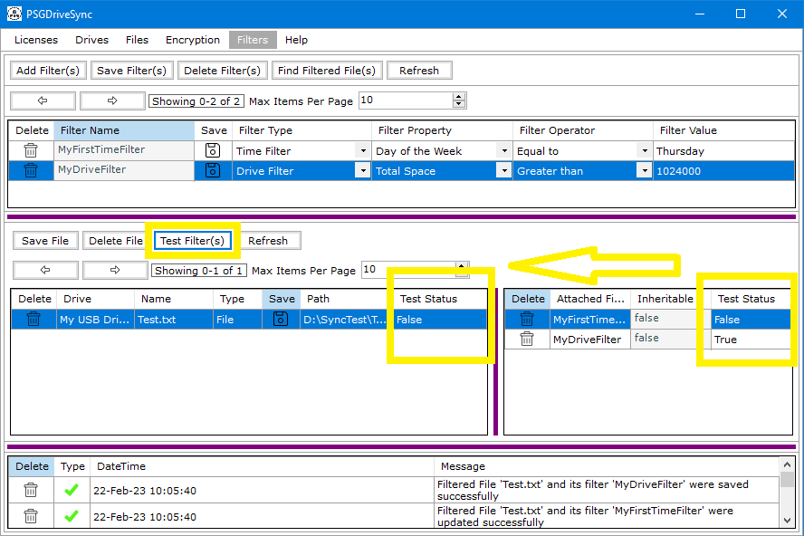

A Filtered File can contain multiple filters and when one of those filters fail then the filtered file does not get synced. In situations like these, the "Test Filter" functionality has been given out that lets you run each filter linked to a filtered file on the spot and figure out which filter fails and which filter passes. Following are the steps needed to be performed in order to Test filters on a filtered file.
|
1 |
Select a filtered file in the list of filtered files in the "Filters" window. |
|
|
1 |
Click on "Test Filter(s)" on the filtered file. The individual filters will show their own results as either "False" or "True" depending on whether the filter passed or not. The Filtered File will also then show its overall result which indicates whether the filtered file will sync or not. "True" indicates that it will Sync while "False" indicates that it will not Sync during Sync operations. |
 |